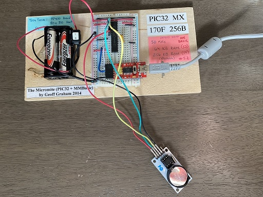
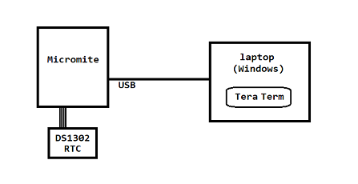
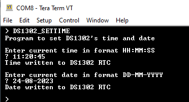
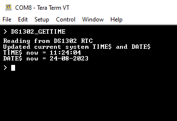
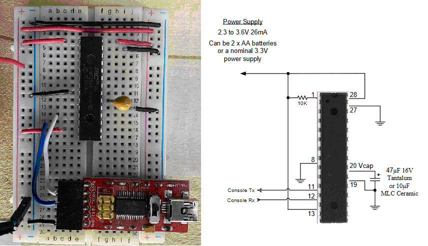
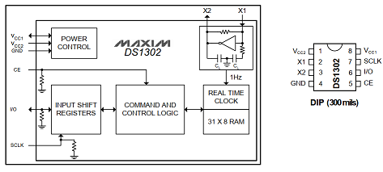

Set Micromite MMBASIC's DATE and TIME Variables using External RTC Module (DS1302 RTC as part of a Velleman VMA301 Module)

A "Micromite" is a PIC32 microcontroller with MMBASIC firmware loaded onto it, allowing the user to create BASIC programs that have access to the PIC32's peripherals and capabilities using a beginner-friendly, high level language.
The MMBASIC environment has some system variables which keep track of the PIC32's internal timer (which can be used to derive a time and date). These variables get reset to midnight of January 1, 2000 on each power cycle (because the timer these values are based on is reset with each power cycle). Here's what those variables hold soon after power on:
> PRINT DATE$
01-01-2000
> PRINT TIME$
00:00:10
In order to have the actual (current, real-world) date and time, an external RTC module can be used. This project uses a DS1302 chip that is hooked up to a backup battery source (a CR2032 3V coin battery) to maintain the time when the power to the PIC32 is off. Specifically, a module made by Velleman, called the VMA301, is used. This module has the DS1302 chip, an external clock crystal, the backup battery, and external pins (4 of which are used in this project: GROUND, DATA, CLOCK, RESET).
This project physically hooks up the RTC module to a minimal Micromite setup (which is on a breadboard), and two BASIC functions are written which can be used to interact with the VMA301 module:

The user interacts with the Micromite using a terminal emulator such as Tera Term, running on a computer connected to the Micromite via a USB cable. Here's what the input/output looks like for each of the BASIC programs that were built for this project:  
Project Setup

1. First make sure all the connections are in place on the Micromite breadboard (so without the VMA301 connected) and that a stable connection can be made to Tera Term. Set the terminal emulator to 80 x 30 characters, 38400 baud.
2. Note the connections from PINs 11 and 12 to the TX and RX pins on the FTDI module. PIN 11, labeled "Console Tx" in the micromite manual, goes to the pin labeled "RXD" on the FTDI board PIN 12, labeled "Console Rx" in the micromite manual, goes to TXD.
3. The FTDI board converts a UART signal from the PIC32 to a USB transmission, where it is then converted back to a UART signal on the host computer. The host must have an FTDI driver which presents an available USB port as a COM port (for serial communication).
4. A diagram of the PIC32MX pinout will be needed to decide which pins will be used for digital input/output. This can be found in the Micromite manual.
5. Connect the VMA301 to the Micromite using the following connections:
- RST (red wire)
- SCLK (yellow wire)
- DAT (green wire)
- GND (black wire)
6. Connect these wires to the PIC32 breadboard:
- green wire -> PIN 2
- yellow wire -> PIN 4
- red wire -> PIN 6
- black wire -> ground rail
Project Solution, Part 1: Research DS1302
Starting with the DS1302 datasheet, I gathered information about how the DS1302 chip worked. (note: MMBASIC supports other RTC chips directly in it's BASIC software library, utilizing standard I2C communication protocols, but the chip used in this project, the DS1302, isn't on the supported list, as it uses a proprietary 3-wire communication, requiring a careful reading of the datasheet and a "bit banging" software solution).
- 31 memory locations, data retained via coin battery
- can be set for single byte or multiple byte communication (only single byte is used in this project).
- the real-time clock/calendar provides seconds, minutes, hours, day, date, month, year, and compensates for leap-years.
- only 3 wires are needed for interacting with the chip:
- CE
- I/O (data line)
- SCLK (serial clock)
- Here is a block diagram of how the chip is organized internally: 
- a single-byte command is sent over the serial line (from host to DS1302) and retained in the Input Shift Register to be processed. Then, depending of whether it is a READ or WRITE operation, data is received from the host, or data is loaded from one of the internal 31 registers into the shift register to be serially output to the host.
- Here is how the DS1302 chip is wired inside the VMA301 module:
- Vcc2 (pin 1) is connected to the coin battery (backup battery)
- Vcc1 (pin 8) this can be connected to the Micromite's power rail, so that when the micromite is on, it will supply power to the VMA301 module, drawing no current from the coin battery while communicating with the micromite.
- pins 2 and 3 are connected to a crystal on the VMA301 board. (32 kHz)
- CE (pin 5) must be asserted high during a read or write. This pin has an internal pulldown resistor to ground. If the CE input is low, all data transfer terminates and the I/O pin goes to a high-impedance state.
- I/O (pin 6) has an internal pulldown resistor.
- SCLK (pin 7) is used to synchronize data movement on the serial interface. The solution to this project manually bit-bangs this signal to carefully control the communication over the serial line. This pin also has an internal pulldown resistor. A clock cycle is a sequence of a rising edge followed by a falling edge. For data inputs, data must be valid during the rising edge of the clock and data bits are output on the falling edge of clock.
- Command byte has the following format:
- bit 7, high bit - always 1
- bit 6, high (1) = RAM access request, low (0) = CK
- bit 5 - bit 1 (5 bits) A4 through A0
- bit 0, low bit - high (1) = READ, low(0) = WRITE
- DATA INPUT: Following the eight SCLK cycles that input a write command byte, a data byte is input on the rising edge of the next eight SCLK cycles. Additional SCLK cycles are ignored should they inadvertently occur. Data is input starting with bit 0.
- DATA OUTPUT: Following the eight SCLK cycles that input a read command byte, a data byte is output on the falling edge of the next eight SCLK cycles. Note that the first data bit to be transmitted occurs on the first falling edge after the last bit of the command byte is written.
- An important note about the serial communication:
- The command byte is sent to the DS1302 lowest bit first (bit 0), then bit 1, bit 1, all the way to bit 7.
- The data byte following the command byte is also sent bit 0 first, then bit 1, etc.
- Notice that these command bytes are encoded in BASIC arrays, with the highest bit of the command byte (bit 7) located at index 0 of the array. Bit 6 of the command byte is located at index 1.
- Therefore, when sending bits, and you want to send bit 0 of the command byte first, you actually have to send index 7, then index 6, and so on.
Project Solution, Part 2: Implement MMBASIC Code for SETTIME
Run this program to gather current date/time from the user (from command line), and the program will communicate with the DS1302 to update it's memory/registers. The following is pseudocode for how the program functions. You can see the actual source code here.
- 3 lines are used for the 3-wire communication protocol: DAT, SCLK, and RST
- The PIC32 is assignd a pin for each of these (pins 2, 4, and 6 respectively), and these are set to Digital Output mode.
- A global array OUTPUT_DATA(0-7) is declared to hold a data payload for writing to the DS1302.
- 6 arrays are declared to each hold the command byte needed for the 6 writes (SEC, MIN, HOUR, DATE, MONTH, and YEAR).
- The user asked to enter the current time in format HH:MM:SS. These are captured in a single string input, then split up (using BASIC's MID$ function) into individual integers.
- These integers are sent as an argument to the SET_OUTPUT function, which breaks apart the 2-digit numeric argument and splices it into the global OUTPUT_DATA array, 4 bits per digit (also known as BCD).
- Numeric data is sent as BCD (Binary Coded Decimal), so a separate function is used that takes a two digit number and convert it into two separate encoded decimals. A global array (size 8) called OUTPUT_DATA is loaded with this information
- Example: 23 (stored as 10111)
- OUTPUT_DATA[0-3] = 0010 (2)
- OUTPUT_DATA[4-7] = 0011 (3)
- The WRITE_TRANSFER function is then called with the appropriate command byte (so when writing HH, hours, the COMMAND_WRITE_HOUR() array is sent to the WRITE_TRANSFER function as an argument).
- Here's how transfer works:
- all three lines (DAT, SCLK, RST) are set low (0). When SCLK is brought to 0, this is the first stage of initiating a transfer.
- The RST line is brought high (1) as the second stage of initiating a transfer. The DS1302 chip is now ready to accept a command byte.
- The command byte is sent, being careful to send in the least significant bit first. Care must be taken because its easy to confuse array indices in BASIC and bit locations in the DS1302's registers. Bit 0 in the chip's register will correspond to index 7 of the array in BASIC. Bit 1 corresponds to index 6, and so on.
- Once the command byte has been sent (the SCLK toggled after each bit is sent) the data payload is immediately sent next.
- Setting pin RST to 0 ends the transfer.
- This process is repeated to gather date information in the same manner.
Project Solution, Part 3: Implement MMBASIC Code for GETTIME
"GETTIME" in this sense refers to "getting" the date/time information that is stored on the DS1302 and using it to set MMBASIC's TIME$ and DATE$ variables. The following is pseudocode for how the program functions. You can see the actual source code here.
- PIC32 pins are assigned (pin 2 = DAT, pin 4 = SCLK, pin 6 = RST)
- Command bytes are declared and defined
- No user input is needed, as the program directly requests the required information in 6 calls:
- SECONDS
- MINUTES
- HOURS
- DATE
- MONTH
- YEAR
- These values are captured as strings, then concatenated into two strings, T$ and D$.
- TIME$ an DATE$ (the system variables that are part of MMBASIC) are assigned directly, using T$ and D$